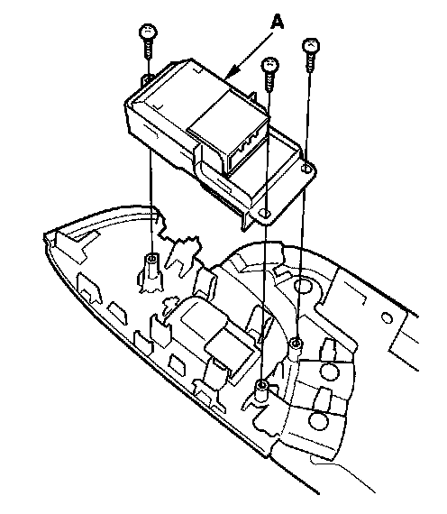

Front Passenger's Power Window Switch Replacement
Front Passenger's Power Window Switch Replacement1. Remove the front passenger's door panel, and disconnect the 14P connector from the front passenger's power window switch.
2. Remove the power window switch panel.

3. Remove the three mounting screws and the front passenger's power window switch (A).
4. Install the switch in the reverse order of removal.
5. Reset the power window control unit.